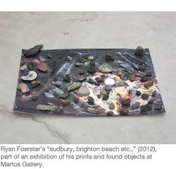

ART IN REVIEW:
RYAN FOERSTER
By Karen RosenbergNovember 16, 2012, Section C32
Martos Gallery
540 West 29th Street, Chelsea
Through Wednesday
Ryan Foerster practices a fetching, free-spirited form of photography in which mistakes and accidents are valued and much is left to chance. Entropy reigns supreme at his latest solo, despite the cyan-and-magenta color scheme.
The installation style owes something to Wolfgang Tillmans, especially in the mesmerizing, free-associative cluster of prints, printing plates and assorted found objects covering one of the gallery walls. Ryan McGinley may be another influence, as seen in portraits of friends en déshabillé. But Mr. Foerster has his own quirky process, one that takes place both inside the darkroom and out in nature.
Typically he will place photosensitive paper on the ground outdoors and cover it with dirt, leaves or, as in “Giant Compost,” food scraps. These intriguing works (and others made with corroded mirrors) link photography, long associated with preservation, to decay. And they have a lush, painterly messiness that’s difficult to resist, even when they evoke floods and other disasters; in “sudbury, brighton beach etc.,” a print lies on the floor under a scattering of rocks and slag.
Works like these tip over from photography into sculpture, but Mr. Foerster still has some work to do in this second medium; his larger found-object sculptures, like the doubled-over bed frame or the single piece of bent aluminum, are irritatingly coy. They could use a little of the nothing-is-precious attitude of the photographs.
A version of this review appeared in print on November 16, 2012, on page C32 of the New York edition with the headline: RYAN FOERSTER.
http://www.nytimes.com/2012/11/16/arts/design/ryan-foerster.html
Ryan Foerster
The New Yorker Review
November 15, 2012
http://www.newyorker.com/arts/events/art/ryan-foerster-martos
Link to press release and exhibition images
www.martosgallery.com/exhibitions/ryan_foerster.html
Martos Gallery
540 West 29th Street New York, NY 10001
For further information please contact gracie@martosgallery.com or 212-560-0670